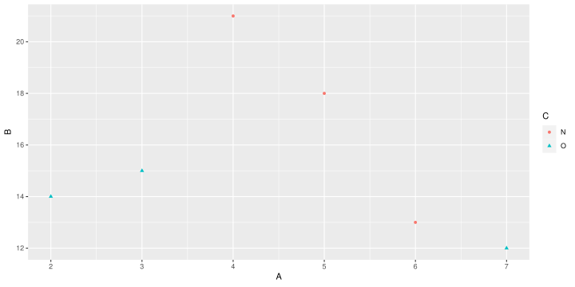
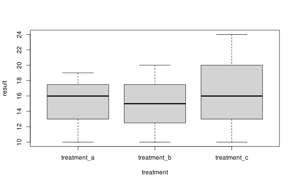
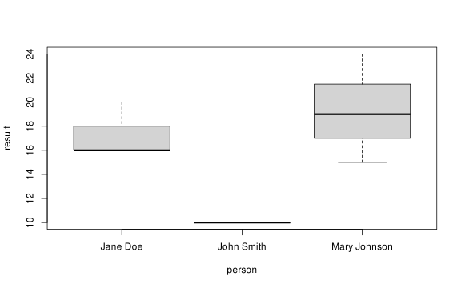
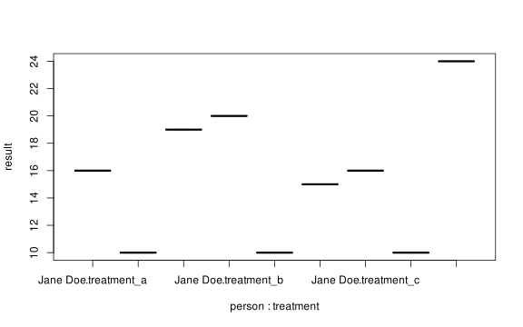
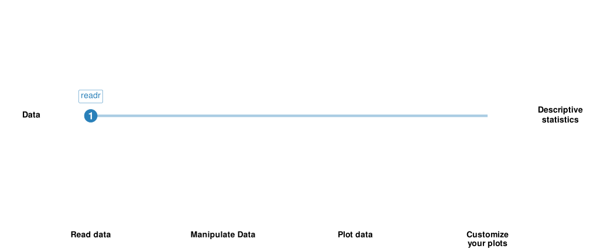
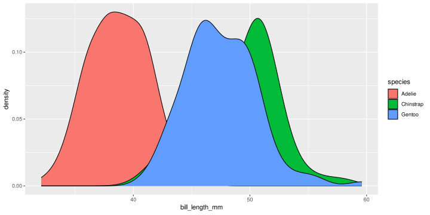
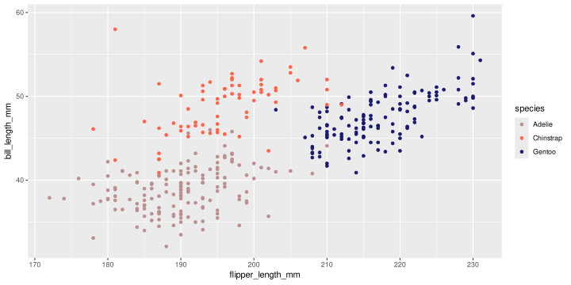
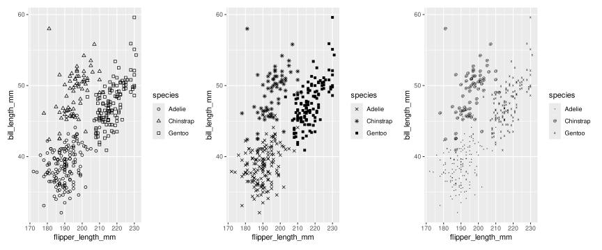
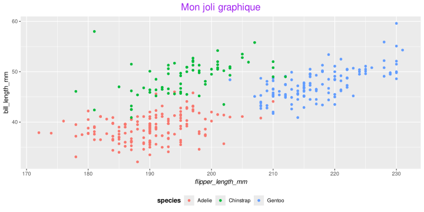
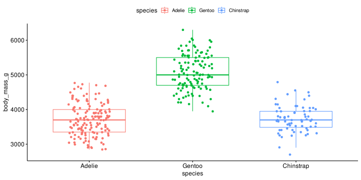

Graphiques avec R : ggplot2
Vincent ROCHER & Sébastien Déjean
9/6/23
Préambule
Prerequisites:
- Use R on a regular basis
- Forget all you know about plots in R without ggplot
Goals :
- Understand the logic behing the grammar of graphics (gg of ggplot2)
- Get started with ggplot2
- Learn to get things done
- Have fun!
Grammar of Graphics
Note
Grammaire : nom féminin, XIIe siècle. Dérivé du latin grammatica, emprunté du grec grammatikê, « grammaire, culture ». Ensemble des règles qui forment le système d’une langue et que l’on doit suivre pour parler ou écrire conformément à l’usage (Dictionnaire de l’académie Française, 9e édition)
Grammar gives language rules. Wilkinson 2005
Grammar of Graphics
Set of rules to go from a data table to a plot
Variable space
| A | B | C |
|---|---|---|
| 2 | 14 | O |
| 3 | 15 | O |
| 4 | 21 | N |
| 5 | 18 | N |
| 6 | 13 | N |
| 7 | 12 | O |
Plot
Grammar of Graphics
Variable space
| A | B | C |
|---|---|---|
| 2 | 14 | O |
| 3 | 15 | O |
| 4 | 21 | N |
| 5 | 18 | N |
| 6 | 13 | N |
| 7 | 12 | O |
Aesthetic space
| colour | shape | x | y | PANEL | group | size | fill | alpha | stroke |
|---|---|---|---|---|---|---|---|---|---|
| #00BFC4 | 17 | 2 | 14 | 1 | 2 | 1.5 | NA | NA | 0.5 |
| #00BFC4 | 17 | 3 | 15 | 1 | 2 | 1.5 | NA | NA | 0.5 |
| #F8766D | 16 | 4 | 21 | 1 | 1 | 1.5 | NA | NA | 0.5 |
| #F8766D | 16 | 5 | 18 | 1 | 1 | 1.5 | NA | NA | 0.5 |
| #F8766D | 16 | 6 | 13 | 1 | 1 | 1.5 | NA | NA | 0.5 |
| #00BFC4 | 17 | 7 | 12 | 1 | 2 | 1.5 | NA | NA | 0.5 |
Plot

The grammar tells us that a statistical graphic is a mapping from data to aesthetic attributes (colour, shape, size) of geometric objects (points, lines, bars).1
Aesthetics & Scales
Aesthetics
Properties that can be perceived on the graphic: location, colour, shape, size
Each aesthetic can be mapped to a variable or set to a constant value
Scales
Controls the mapping from data to aesthetics
- Scale : function from a region in data space to a region in aesthetic space.
- Without a scale, there is no way to go from the data to aesthetics so a scale is required for every aesthetics used on the plot
- For position aesthetics, the axes are the guides, for all other aesthetics, legends do the job
Geometric object (layer)
Layers are responsible for creating the objects that we perceive on the plot.
The plot is not ready to be displayed until at least one layer is added.
Minimal layer: specify a geom
- Performs the actual rendering of the layer
- Control the type of plot that you create
Layered Grammar of Graphics
- Defaults
- Data
- Mapping from variables to aesthetics
- Layer
- Data (optional, if already defined)
- Mapping (optional, if already defined)
- Geometric object
- Statistical transformation
- Position adjustement
- Scale: controls the mapping from data to aesthetic attributes, one scale or each aesthetic property
- Coordinate system
- Facet specification : to build the same plot for different subsets of the dataset
ggplot2: a plot is an object
A plot object is a list with:
- Data (stored in the plot object)
- Mapping
- Layers
- Scales
- Coordinates
- Facet
List of 9
$ data :'data.frame': 6 obs. of 3 variables:
..$ A: int [1:6] 2 3 4 5 6 7
..$ B: num [1:6] 14 15 21 18 13 12
..$ C: chr [1:6] "O" "O" "N" "N" ...
$ layers :List of 1
..$ :Classes 'LayerInstance', 'Layer', 'ggproto', 'gg' <ggproto object: Class LayerInstance, Layer, gg>
aes_params: list
compute_aesthetics: function
compute_geom_1: function
compute_geom_2: function
compute_position: function
compute_statistic: function
computed_geom_params: list
computed_mapping: uneval
computed_stat_params: list
constructor: call
data: waiver
draw_geom: function
finish_statistics: function
geom: <ggproto object: Class GeomPoint, Geom, gg>
aesthetics: function
default_aes: uneval
draw_group: function
draw_key: function
draw_layer: function
draw_panel: function
extra_params: na.rm
handle_na: function
non_missing_aes: size shape colour
optional_aes:
parameters: function
rename_size: FALSE
required_aes: x y
setup_data: function
setup_params: function
use_defaults: function
super: <ggproto object: Class Geom, gg>
geom_params: list
inherit.aes: TRUE
layer_data: function
map_statistic: function
mapping: NULL
position: <ggproto object: Class PositionIdentity, Position, gg>
compute_layer: function
compute_panel: function
required_aes:
setup_data: function
setup_params: function
super: <ggproto object: Class Position, gg>
print: function
setup_layer: function
show.legend: NA
stat: <ggproto object: Class StatIdentity, Stat, gg>
aesthetics: function
compute_group: function
compute_layer: function
compute_panel: function
default_aes: uneval
dropped_aes:
extra_params: na.rm
finish_layer: function
non_missing_aes:
optional_aes:
parameters: function
required_aes:
retransform: TRUE
setup_data: function
setup_params: function
super: <ggproto object: Class Stat, gg>
stat_params: list
super: <ggproto object: Class Layer, gg>
$ scales :Classes 'ScalesList', 'ggproto', 'gg' <ggproto object: Class ScalesList, gg>
add: function
clone: function
find: function
get_scales: function
has_scale: function
input: function
n: function
non_position_scales: function
scales: list
super: <ggproto object: Class ScalesList, gg>
$ mapping :List of 4
..$ x : language ~A
.. ..- attr(*, ".Environment")=<environment: R_GlobalEnv>
..$ y : language ~B
.. ..- attr(*, ".Environment")=<environment: R_GlobalEnv>
..$ colour: language ~C
.. ..- attr(*, ".Environment")=<environment: R_GlobalEnv>
..$ shape : language ~C
.. ..- attr(*, ".Environment")=<environment: R_GlobalEnv>
..- attr(*, "class")= chr "uneval"
$ theme : list()
$ coordinates:Classes 'CoordCartesian', 'Coord', 'ggproto', 'gg' <ggproto object: Class CoordCartesian, Coord, gg>
aspect: function
backtransform_range: function
clip: on
default: TRUE
distance: function
expand: TRUE
is_free: function
is_linear: function
labels: function
limits: list
modify_scales: function
range: function
render_axis_h: function
render_axis_v: function
render_bg: function
render_fg: function
setup_data: function
setup_layout: function
setup_panel_guides: function
setup_panel_params: function
setup_params: function
train_panel_guides: function
transform: function
super: <ggproto object: Class CoordCartesian, Coord, gg>
$ facet :Classes 'FacetNull', 'Facet', 'ggproto', 'gg' <ggproto object: Class FacetNull, Facet, gg>
compute_layout: function
draw_back: function
draw_front: function
draw_labels: function
draw_panels: function
finish_data: function
init_scales: function
map_data: function
params: list
setup_data: function
setup_params: function
shrink: TRUE
train_scales: function
vars: function
super: <ggproto object: Class FacetNull, Facet, gg>
$ plot_env :<environment: R_GlobalEnv>
$ labels :List of 4
..$ x : chr "A"
..$ y : chr "B"
..$ colour: chr "C"
..$ shape : chr "C"
- attr(*, "class")= chr [1:2] "gg" "ggplot"ggplot2: data
ggplot2: aesthetics
ggplot2: layer with geom
ggplot2 training
- Slides : https://rochevin.github.io/formation_ggplot2
- Download slides and data: https://github.com/rochevin/formation_ggplot2/archive/refs/heads/main.zip
- Compagnon wiki: https://github.com/rochevin/formation_ggplot2/wiki
Why ggplot2 instead of base plot ?
- Provide helpful commands to create complex, “almost” publication ready plots.
- Minimal changes from the data are needed to change from a barplot to a scatterplot.
- Include summary statistics (mean / median / linear regression).
- Plots are heavily customizable (even if the plot is generated by someone else).
- Heavily documented and used.
- A lot of extensions.

Thomas Mock (2022). Tidy Tuesday: A weekly data project aimed at the R ecosystem.
Why ggplot2 instead of base plot ?
R packages for data science
The tidyverse is an opinionated collection of R packages designed for data science. All packages share an underlying design philosophy, grammar, and data structures.
Install the complete tidyverse with:
Look at the cheatsheets: https://www.rstudio.com/resources/cheatsheets/
Tidyverse
Load packages
── Attaching packages ─────────────────────────────────────────── tidyverse 1.3.1 ──
✔ ggplot2 3.3.6 ✔ purrr 0.3.4
✔ tibble 3.1.7 ✔ dplyr 1.0.9
✔ tidyr 1.2.0 ✔ stringr 1.4.0
✔ readr 2.1.2 ✔ forcats 0.5.1
── Conflicts ────────────────────────────────────────────── tidyverse_conflicts() ──
✖ dplyr::filter() masks stats::filter()
✖ dplyr::lag() masks stats::lag()Content
| Parts | Tools |
|---|---|
| Read data | readr |
| Manipulate Data | dplyr/tidyr |
| Plot data | ggplot2 |
| Customize your plots | ggplot2 extensions |
Tidy data
Tidying: structuring datasets to facilitate analysis.
A tidy dataset :

Why tidying a dataset ?
| treatment_a | treatment_b | treatment_c | |
|---|---|---|---|
| John Smith | 22 | 14 | 14 |
| Jane Doe | 17 | 15 | 25 |
| Mary Johnson | 10 | 15 | 17 |
Why tidying a dataset ?
| John Smith | Jane Doe | Mary Johnson | |
|---|---|---|---|
| treatment_a | 22 | 17 | 10 |
| treatment_b | 14 | 15 | 15 |
| treatment_c | 14 | 25 | 17 |
Why tidying a dataset ?
| person | treatment | result |
|---|---|---|
| John Smith | treatment_a | 22 |
| John Smith | treatment_b | 14 |
| John Smith | treatment_c | 14 |
| Jane Doe | treatment_a | 17 |
| Jane Doe | treatment_b | 15 |
| Jane Doe | treatment_c | 25 |
| Mary Johnson | treatment_a | 10 |
| Mary Johnson | treatment_b | 15 |
| Mary Johnson | treatment_c | 17 |
Why tidying a dataset ?
Why tidying a dataset ?
Why tidying a dataset ?
Read a dataset
Read a dataset with base R
Sepal.Length Sepal.Width Petal.Length Petal.Width Species
1 5.1 3.5 1.4 0.2 setosa
2 4.9 3.0 1.4 0.2 setosa
3 4.7 3.2 1.3 0.2 setosa
4 4.6 3.1 1.5 0.2 setosa
5 5.0 3.6 1.4 0.2 setosa
6 5.4 3.9 1.7 0.4 setosa
7 4.6 3.4 1.4 0.3 setosa
8 5.0 3.4 1.5 0.2 setosa
9 4.4 2.9 1.4 0.2 setosa
10 4.9 3.1 1.5 0.1 setosa
11 5.4 3.7 1.5 0.2 setosa
12 4.8 3.4 1.6 0.2 setosa
13 4.8 3.0 1.4 0.1 setosa
14 4.3 3.0 1.1 0.1 setosa
15 5.8 4.0 1.2 0.2 setosa
16 5.7 4.4 1.5 0.4 setosa
17 5.4 3.9 1.3 0.4 setosa
18 5.1 3.5 1.4 0.3 setosa
19 5.7 3.8 1.7 0.3 setosa
20 5.1 3.8 1.5 0.3 setosa
21 5.4 3.4 1.7 0.2 setosa
22 5.1 3.7 1.5 0.4 setosa
23 4.6 3.6 1.0 0.2 setosa
24 5.1 3.3 1.7 0.5 setosa
25 4.8 3.4 1.9 0.2 setosa
26 5.0 3.0 1.6 0.2 setosa
27 5.0 3.4 1.6 0.4 setosa
28 5.2 3.5 1.5 0.2 setosa
29 5.2 3.4 1.4 0.2 setosa
30 4.7 3.2 1.6 0.2 setosa
31 4.8 3.1 1.6 0.2 setosa
32 5.4 3.4 1.5 0.4 setosa
33 5.2 4.1 1.5 0.1 setosa
34 5.5 4.2 1.4 0.2 setosa
35 4.9 3.1 1.5 0.2 setosa
36 5.0 3.2 1.2 0.2 setosa
37 5.5 3.5 1.3 0.2 setosa
38 4.9 3.6 1.4 0.1 setosa
39 4.4 3.0 1.3 0.2 setosa
40 5.1 3.4 1.5 0.2 setosa
41 5.0 3.5 1.3 0.3 setosa
42 4.5 2.3 1.3 0.3 setosa
43 4.4 3.2 1.3 0.2 setosa
44 5.0 3.5 1.6 0.6 setosa
45 5.1 3.8 1.9 0.4 setosa
46 4.8 3.0 1.4 0.3 setosa
47 5.1 3.8 1.6 0.2 setosa
48 4.6 3.2 1.4 0.2 setosa
49 5.3 3.7 1.5 0.2 setosa
50 5.0 3.3 1.4 0.2 setosa
51 7.0 3.2 4.7 1.4 versicolor
52 6.4 3.2 4.5 1.5 versicolor
53 6.9 3.1 4.9 1.5 versicolor
54 5.5 2.3 4.0 1.3 versicolor
55 6.5 2.8 4.6 1.5 versicolor
56 5.7 2.8 4.5 1.3 versicolor
57 6.3 3.3 4.7 1.6 versicolor
58 4.9 2.4 3.3 1.0 versicolor
59 6.6 2.9 4.6 1.3 versicolor
60 5.2 2.7 3.9 1.4 versicolor
61 5.0 2.0 3.5 1.0 versicolor
62 5.9 3.0 4.2 1.5 versicolor
63 6.0 2.2 4.0 1.0 versicolor
64 6.1 2.9 4.7 1.4 versicolor
65 5.6 2.9 3.6 1.3 versicolor
66 6.7 3.1 4.4 1.4 versicolor
67 5.6 3.0 4.5 1.5 versicolor
68 5.8 2.7 4.1 1.0 versicolor
69 6.2 2.2 4.5 1.5 versicolor
70 5.6 2.5 3.9 1.1 versicolor
71 5.9 3.2 4.8 1.8 versicolor
72 6.1 2.8 4.0 1.3 versicolor
73 6.3 2.5 4.9 1.5 versicolor
74 6.1 2.8 4.7 1.2 versicolor
75 6.4 2.9 4.3 1.3 versicolor
76 6.6 3.0 4.4 1.4 versicolor
77 6.8 2.8 4.8 1.4 versicolor
78 6.7 3.0 5.0 1.7 versicolor
79 6.0 2.9 4.5 1.5 versicolor
80 5.7 2.6 3.5 1.0 versicolor
81 5.5 2.4 3.8 1.1 versicolor
82 5.5 2.4 3.7 1.0 versicolor
83 5.8 2.7 3.9 1.2 versicolor
84 6.0 2.7 5.1 1.6 versicolor
85 5.4 3.0 4.5 1.5 versicolor
86 6.0 3.4 4.5 1.6 versicolor
87 6.7 3.1 4.7 1.5 versicolor
88 6.3 2.3 4.4 1.3 versicolor
89 5.6 3.0 4.1 1.3 versicolor
90 5.5 2.5 4.0 1.3 versicolor
91 5.5 2.6 4.4 1.2 versicolor
92 6.1 3.0 4.6 1.4 versicolor
93 5.8 2.6 4.0 1.2 versicolor
94 5.0 2.3 3.3 1.0 versicolor
95 5.6 2.7 4.2 1.3 versicolor
96 5.7 3.0 4.2 1.2 versicolor
97 5.7 2.9 4.2 1.3 versicolor
98 6.2 2.9 4.3 1.3 versicolor
99 5.1 2.5 3.0 1.1 versicolor
100 5.7 2.8 4.1 1.3 versicolor
101 6.3 3.3 6.0 2.5 virginica
102 5.8 2.7 5.1 1.9 virginica
103 7.1 3.0 5.9 2.1 virginica
104 6.3 2.9 5.6 1.8 virginica
105 6.5 3.0 5.8 2.2 virginica
106 7.6 3.0 6.6 2.1 virginica
107 4.9 2.5 4.5 1.7 virginica
108 7.3 2.9 6.3 1.8 virginica
109 6.7 2.5 5.8 1.8 virginica
110 7.2 3.6 6.1 2.5 virginica
111 6.5 3.2 5.1 2.0 virginica
112 6.4 2.7 5.3 1.9 virginica
113 6.8 3.0 5.5 2.1 virginica
114 5.7 2.5 5.0 2.0 virginica
115 5.8 2.8 5.1 2.4 virginica
116 6.4 3.2 5.3 2.3 virginica
117 6.5 3.0 5.5 1.8 virginica
118 7.7 3.8 6.7 2.2 virginica
119 7.7 2.6 6.9 2.3 virginica
120 6.0 2.2 5.0 1.5 virginica
121 6.9 3.2 5.7 2.3 virginica
122 5.6 2.8 4.9 2.0 virginica
123 7.7 2.8 6.7 2.0 virginica
124 6.3 2.7 4.9 1.8 virginica
125 6.7 3.3 5.7 2.1 virginica
126 7.2 3.2 6.0 1.8 virginica
127 6.2 2.8 4.8 1.8 virginica
128 6.1 3.0 4.9 1.8 virginica
129 6.4 2.8 5.6 2.1 virginica
130 7.2 3.0 5.8 1.6 virginica
131 7.4 2.8 6.1 1.9 virginica
132 7.9 3.8 6.4 2.0 virginica
133 6.4 2.8 5.6 2.2 virginica
134 6.3 2.8 5.1 1.5 virginica
135 6.1 2.6 5.6 1.4 virginica
136 7.7 3.0 6.1 2.3 virginica
137 6.3 3.4 5.6 2.4 virginica
138 6.4 3.1 5.5 1.8 virginica
139 6.0 3.0 4.8 1.8 virginica
140 6.9 3.1 5.4 2.1 virginica
141 6.7 3.1 5.6 2.4 virginica
142 6.9 3.1 5.1 2.3 virginica
143 5.8 2.7 5.1 1.9 virginica
144 6.8 3.2 5.9 2.3 virginica
145 6.7 3.3 5.7 2.5 virginica
146 6.7 3.0 5.2 2.3 virginica
147 6.3 2.5 5.0 1.9 virginica
148 6.5 3.0 5.2 2.0 virginica
149 6.2 3.4 5.4 2.3 virginica
150 5.9 3.0 5.1 1.8 virginicaRead a dataset with base R
- Return a
data.frameobject. read.csv,read.csv2,read.delimcan also be used.- Cannot read
.xslfiles (we have to use another package).
Read a dataset with readr
# A tibble: 150 × 5
Sepal.Length Sepal.Width Petal.Length Petal.Width Species
<dbl> <dbl> <dbl> <dbl> <chr>
1 5.1 3.5 1.4 0.2 setosa
2 4.9 3 1.4 0.2 setosa
3 4.7 3.2 1.3 0.2 setosa
4 4.6 3.1 1.5 0.2 setosa
5 5 3.6 1.4 0.2 setosa
6 5.4 3.9 1.7 0.4 setosa
7 4.6 3.4 1.4 0.3 setosa
8 5 3.4 1.5 0.2 setosa
9 4.4 2.9 1.4 0.2 setosa
10 4.9 3.1 1.5 0.1 setosa
# ℹ 140 more rowsRead a dataset with readr
- Return a
tibbleobject. read_csv,read_csv2,read_tablecan also be used..xslfiles are managed byreadxl, an other tidyverse package (not loaded by default).
Tibbles: tibble::tibble()
Pros:
- Cells can contain list and data.frame.
- It never changes an input’s type (i.e., no more
stringsAsFactors = FALSE!). - Can use not valid R variable names (
:)) as column names. - Refined print method that shows only the first 10 rows.
Cons:
- It never uses
row.names().- use
tibble::rownames_to_column().
- use
Data manipulation with dplyr and tidyr
Data manipulation with dplyr and tidyr
dplyr is a grammar of data manipulation, providing a consistent set of verbs that help you solve the most common data manipulation challenges:
mutate()adds new variables that are functions of existing variablesselect()picks variables based on their names.filter()picks cases based on their values.summarise()reduces multiple values down to a single summary.arrange()changes the ordering of the rows.group_by()perform any operation “by group”.
Some examples :
Pipes
The pipe %>%:
- Come from the package by Stefan Milton Bache.
- Automatically loaded in tidyverse.
- Equivalent to
|inbash
Species
Setosa
Setosa
Setosa
Setosa
Setosa
Setosa
Setosa
Setosa
SetosaPipes vs no pipes : without pipe
Pipes vs no pipes : without pipe
Pipes vs no pipes : with pipe
Prepare penguins dataset for ggplot2
palmerpenguins dataset
Note
The palmerpenguins R package contains contains size measurements for three penguin species observed on three islands in the Palmer Archipelago, Antarctica.

# A tibble: 344 × 8
species island bill_length_mm bill_depth_mm flipper_length_mm body_mass_g
<chr> <chr> <dbl> <dbl> <dbl> <dbl>
1 Adelie Torgersen 39.1 18.7 181 3750
2 Adelie Torgersen 39.5 17.4 186 3800
3 Adelie Torgersen 40.3 18 195 3250
4 Adelie Torgersen NA NA NA NA
5 Adelie Torgersen 36.7 19.3 193 3450
6 Adelie Torgersen 39.3 20.6 190 3650
7 Adelie Torgersen 38.9 17.8 181 3625
8 Adelie Torgersen 39.2 19.6 195 4675
9 Adelie Torgersen 34.1 18.1 193 3475
10 Adelie Torgersen 42 20.2 190 4250
# ℹ 334 more rows
# ℹ 2 more variables: sex <chr>, year <dbl>Premier graphique
Au début, il existe mais il ne montre rien…
Je ne vois rien ! Pourtant l’objet MonPremierGraphique existe et il contient plein de choses.
summary(MonPremierGraphique)typeof(MonPremierGraphique)names(MonPremierGraphique)class(MonPremierGraphique)head(MonPremierGraphique$data)MonPremierGraphique$layers
data: species, island, bill_length_mm, bill_depth_mm,
flipper_length_mm, body_mass_g, sex, year [344x8]
faceting: <ggproto object: Class FacetNull, Facet, gg>
compute_layout: function
draw_back: function
draw_front: function
draw_labels: function
draw_panels: function
finish_data: function
init_scales: function
map_data: function
params: list
setup_data: function
setup_params: function
shrink: TRUE
train_scales: function
vars: function
super: <ggproto object: Class FacetNull, Facet, gg># A tibble: 6 × 8
species island bill_length_mm bill_depth_mm flipper_length_mm body_mass_g
<chr> <chr> <dbl> <dbl> <dbl> <dbl>
1 Adelie Torgersen 39.1 18.7 181 3750
2 Adelie Torgersen 39.5 17.4 186 3800
3 Adelie Torgersen 40.3 18 195 3250
4 Adelie Torgersen NA NA NA NA
5 Adelie Torgersen 36.7 19.3 193 3450
6 Adelie Torgersen 39.3 20.6 190 3650
# ℹ 2 more variables: sex <chr>, year <dbl>HW a dit : The plot is not ready to be displayed until one layer is added.
OK, donc c’est normal si je ne vois rien, car le composant layers de l’objet MonPremierGraphique ne contient rien.
… alors j’essaie d’y mettre des choses…
C’est mieux, je vois des axes avec les variables que je veux représenter en x et y, mais rien de plus.
HW a dit : A minimal layer may do nothing more than specify a
geom, a way of visually representing the data.
… et finalement, je vois !
Alors, je vais ajouter un layer. Pour cela, plein de fonctions existent pour dire quels objets géométriques je veux utiliser pour la représentation. Soyons modestes, commençons par des points avec la fonction geom_point().
Youpi, trompettes et confettis ! Voilà, mon premier graphique réalisé avec ggplot2.
… et finalement, je vois !
Sauvons-le et auscultons-le.
data: species, island, bill_length_mm, bill_depth_mm,
flipper_length_mm, body_mass_g, sex, year [344x8]
mapping: x = ~bill_length_mm, y = ~bill_depth_mm
faceting: <ggproto object: Class FacetNull, Facet, gg>
compute_layout: function
draw_back: function
draw_front: function
draw_labels: function
draw_panels: function
finish_data: function
init_scales: function
map_data: function
params: list
setup_data: function
setup_params: function
shrink: TRUE
train_scales: function
vars: function
super: <ggproto object: Class FacetNull, Facet, gg>
-----------------------------------
geom_point: na.rm = FALSE
stat_identity: na.rm = FALSE
position_identity [[1]]
geom_point: na.rm = FALSE
stat_identity: na.rm = FALSE
position_identity Il a bien un layer et c’est pourquoi je peux voir quelque chose.
Pour mieux (?) comprendre ce qui se passe
Reprenons l’objet MonPremierGraphique
Pour mieux (?) comprendre ce qui se passe
On sait qu’il n’affiche rien car il n’a pas de layer. On a ajouté un layer avec la fonction geom_point().
Pour mieux (?) comprendre ce qui se passe
Mais on aurait aussi bien pu le faire avec la fonction layer(), fonction dans laquelle on spécifie tous les attributs d’un layer : mapping, data (ici c’est inutile car on les a déjà spécifiés dans l’objet MonPremierGraphique, geom, stat et position.
En fait, la fonction geom_point() nous simplifie la vie en appelant elle-même la fonction layer() avec les paramètres qu’il faut.
Pour mieux (?) comprendre ce qui se passe
A noter qu’il existe une façon de faire la même chose en cachant encore plus les choses : la fonction qplot().
Mais, dans la préface à la 2eme édition de ggplot: Elegant Graphics for Data Analysis
HW a dit : Switched from
qplot()toggplot()in the introduction, Chapter 2. Feedback indicated thatqplot()was a crutch: it makes simple plots a little easier, but it doesn’t help with mastering the grammar.
Et effectivement, en utilisant qplot(), on garde à peu près nos habitudes liées à plot() mais la layered grammar est complètement cachée.
Bilan
Pour faire un graphique :
les données sont stockées dans un
data.frameet pas autrement, ce n’est pas négociable !les
aesthetics mappingslient des variables du jeu de données à des propriétés visuelles (utiliser la fonctionaes()).seul l’ajout d’un
layerpermet de visualiser quelque chose (utiliser les fonctionsgeom_*()).Ce qui donne une syntaxe comme celle-ci :
ggplot(data = penguins, aes(x = bill_length_mm, y = bill_depth_mm)) + geom_point()
On est bon ? Oui ? alors, on continue…
Améliorons un peu ce premier graphique
Un peu de couleur
J’aimerais bien que les points soient colorés en fonction de la variable species du jeu de données penguins.
Il suffit pour cela de préciser un lien entre cette variable du jeu de données et la propriété visuelle colour au moyen de la fonction aes().
En changeant la forme
En fait, les couleurs c’est bien, mais si mes lecteurs les distinguent mal, je préfère changer la forme (shape) plutôt que la couleur.

Mouais, pas très lisible. Et si je combinais les deux…
Un peu de couleur… en changeant la forme
On peut utiliser la même variable pour donner à la fois la couleur et la forme. Dans ce cas, une seule légende est affichée.
Les noms des graphiques deviennnent un peu long, je vais me calmer un peu et reprendre depuis le début pour voir si j’ai compris. Je vais pousser un peu le zèle jusqu’à utiliser 2 variables qualitatives (1 pour la couleur, l’autre pour la forme), mais je suis confiant.
Un peu de couleur… en changeant la forme
Et bien voilà ! C’est pas mal tout ça.
Un peu de couleur… en changeant la forme
Juste pour voir, si j’inverse les 2 variables qualitatives.
L’impression est différente. A méditer…
Et si je m’amusais avec les autres variables
Ouh là, là… c’est joli (ou pas), mais qu’ai-je donc fait ? Reprenons calmement :
- je suis toujours dans un nuage de points (
geom_point()) avecflipper_length_mmen abscisses (aes(x= )) etbill_length_mmen ordonnées (aes(y= )). - dans la fonction
aes(), j’ai lié la couleur à la variablebill_depth_mmobtenant ainsi une dégradé de bleu (plus la valeur debill_depth_mmest élevée, plus le symbole est clair). - toujours dans la fonction
aes(), j’ai lié la taille à la variablebody_mass_gobtenant ainsi des points d’autant plus grands que la valeur debody_mass_gest élevée. - pour le même prix, j’ai obtenu les deux légendes associées.
- tous ces éléments illustrent la notion de
scalingqui contrôle le lien entre les données et un attributaesthetic. Tout attributaesthetica besoin d’une échelle. Parfois (souvent), on ne s’en rend pas compte parce qu’une valeur par défaut est prévue.
En vue éclatée
Ok, je peux m’amuser à personnaliser mon graphique avec des couleurs, des formes, des tailles différentes. Et si je restais sobre en présentant un graphique par modalité de la variable species.
Très facile (comme le reste !), il suffit d’utiliser le facetting.
Repartons de MonPremierGraphiqueLeVrai et utilisons, simplement, la fonction facet_wrap().
En vue éclatée
Il va de soi que l’on peut combiner tout ça.
En vue éclatée
Avec un deuxième facteur, on peut réaliser (très facilement, on s’en doute) toute une planche de graphiques, cette fois-ci avec facet_grid().
Histogramme
C’est bien mais il n’y a pas que les nuages de points dans la vie
Pour réaliser un histogramme, il suffit… de le demander. On utilise toujours le data.frame penguins avec cette fois-ci seulement une variable (ici flipper_length_mm en x).
OK, pas génial, mais on a bien un histogramme. Histogramme sur lequel, on peut appliquer les recettes précédentes.
Histogramme
- Le
facettingpour avoir un histogramme par modalité du facteurspecies
Histogramme
- et aussi des couleurs (même si l’interprétation n’en est pas forcément améliorée)
Histogramme
Au fait, vous avez vu qu’il nous embête avec un warning qui parle de stat_bin().
HW a dit : The choice of bins is very important for histograms […]. In
ggplot2, a very simple heuristic is used for the default number of bins: it uses 30, regardless of the data. This is perverse, and ignores all of the research on selecting good bin sizes automatically, but sends a clear message to the user that they need to think about and experiment with the bin width.
Et bim !
Alors, on va essayer de penser un peu et diminuer la largeur des intervalles (binwidth).
Histogramme
OK, ça a l’air d’aller mieux. Et, juste manière, avec des couleurs.
Histogramme
Au fait, juste pour voir si on a compris le principe, comparons
C’est la même chose ! Logique non ? Un histogramme n’est rien d’autre qu’un diagramme en bâtons prenant comme données le nombre de valeurs dans chaque bin.
Histogramme
On peut ainsi s’amuser avec d’autres représentations graphiques de ces counts.
Diagramme en bâtons
Puisque que je viens de voir passer geom_bar, je vais m’attarder un peu dessus pour représenter 2 variables qualitatives.
Adelie Chinstrap Gentoo
Biscoe 44 0 124
Dream 56 68 0
Torgersen 52 0 0Diagramme en bâtons
Puisque que je viens de voir passer geom_bar, je vais m’attarder un peu dessus pour représenter 2 variables qualitatives.
Adelie Chinstrap Gentoo
Biscoe 44 0 124
Dream 56 68 0
Torgersen 52 0 0Diagramme en bâtons
Puisque que je viens de voir passer geom_bar, je vais m’attarder un peu dessus pour représenter 2 variables qualitatives.
Adelie Chinstrap Gentoo
Biscoe 44 0 124
Dream 56 68 0
Torgersen 52 0 0Diagramme en bâtons
Puisque que je viens de voir passer geom_bar, je vais m’attarder un peu dessus pour représenter 2 variables qualitatives.
Adelie Chinstrap Gentoo
Biscoe 44 0 124
Dream 56 68 0
Torgersen 52 0 0Densité
Je poursuis autour de la distribution des données avec la représentation de densité grâce à la fonction… devinez… geom_density().
Pour démarrer, c’est facile, maintenant on gère ça tranquillement.

Densité
Je vais le faire aussi en couleur par modalité de species, maintenant que je suis à l’aise.
Densité
Pour avoir des lignes dans la légende on doit passer par stat_density() :
Densité
Au fait, on a vu fill tout à l’heure, regardons ce que ça donne ici
Superbe ! Euh oui, sauf que je m’attendais à mieux en fait, mais je ne sais pas trop quoi ? Que les courbes ne se cachent les unes derrière les autres par exemple ? Oui c’est exactement ça ! Et alors, on fait comment ? On ajoute de la transparence avec le paramètre alpha.
Densité

Ah ouais, là chapeau. Je prends.
Boxplot
Poursuivons avec des boxplots. D’abord un seul
Boxplot
Puis par modalité de species encore une fois. Pour cela, il suffit de préciser que l’axe des x du graphique est lié à la variable species (oui, elle est qualitative, et alors ?).
Boxplot
Et si je prefère des boxplots à l’horizontale, il suffit d’échanger les coordonnées
Boxplot
ou d’utiliser la fonction coord_flip().
Boxplot
Ce qui est bien avec les boxplots c’est quand on peut aussi voir les points. Simple, il suffit d’ajouter un layer au graphique des boxplots.
Euh oui d’accord, mais c’est pas terrible, on peut pas faire mieux ? Je reformule : comment peut-on faire mieux ?
Boxplot
En évitant la superposition des points par exemple et en jouant aussi sur la tranparence.
Boxplot
J’ai écrit deux fois la même chose dans ma commande (aes(x = species, y = bill_length_mm)), ne pouvais-je pas m’en passer ? Si bien sûr, comme pour les calculs, on factorise. Reprenons depuis le début.
Le fait d’utiliser species en x et bill_length_mm en y étant commun aux deux graphiques que je veux réaliser, je positionne ces informations à un niveau supérieur.
Boxplot
Mais je ne suis pas obligé de tout remonter, il peut y avoir des aesthetics propres à un layer comme ici où on utilise la variable bill_depth_mm pour la taille des points (et cela n’a rien à voir avec les boxplots).
Boxplot
Sinon, il y aussi la fonction geom_jitter() qui fait le boulot aussi bien (mieux ?) et on peut même resserrer un peu les points.
Jouons du violon
Et si je remplaçais les boîtes par des violons ! Il suffit de remplacer geom_boxplot par… geom_violin.
Jouons du violon
Pour les mêmes en couleur, avec un peu de transparence sur les violons :
C’est presque trop facile.
Les nuages de points : le retour
Au cas où vous ne seriez pas encore convaincus par ggplot2, on va revenir un moment sur les nuages de points. Et là, normalement, c’est l’effet waouh garanti.
On a vu quelque part qu’un layer a 5 parties : 1/ les données 2/ les aesthetics, 3/ les geoms, 4/ les transformations statistiques et 5/ les ajustements de position. Jusqu’à présent, on a vu un peu de tout ça, sauf des statistiques, non ? Alors, allons-y !
Les nuages de points : le retour
OK, jusqu’ici, on connaît, pas de quoi s’enflammer. Attention, le spectacle va commencer.
Euh oui d’accord, c’est bien mais il sort d’où ce truc ? Et bien, il nous l’a dit geom_smooth() using method = 'loess' and formula 'y ~ x'.
Les nuages de points : le retour
Un peu trop lisse ?
Les nuages de points : le retour
Pas assez ?
Les nuages de points : le retour
OK, si vous préférez une régression linéaire plutôt qu’un loess, il suffit de demander.
Et d’autres, voir ?geom_smooth.
Les nuages de points : le retour
Déclinons là-dessus ce que l’on sait faire.
- En facettes :
Les nuages de points : le retour
On note que l’échelle en x et en y est la même pour tous les sous-graphiques. On peut “libérer” l’une et/ou l’autre de ces échelles

Les nuages de points : le retour
- En couleurs
Les nuages de points : le retour
Ca commence à être sympa non ? Et noter l’aspect synthétique et concis du code.
Remarque: On peut faire de l’extrapolation (seulement avec la méthode lm):
Les nuages de points : le retour
Ca commence à être sympa non ? Et noter l’aspect synthétique et concis du code.
Remarque: On peut faire de l’extrapolation (seulement avec la méthode lm):
Un petit truc pour parler des systèmes de coordonnées ou comment réaliser un camembert ?
On peut apprécier ou pas les diagrammes circulaires ou camembert ou pie chart, mais ce serait bien de savoir en faire avec ggplot2. Cherchez bien dans l’aide, vous ne trouverez pas de fonction geom_pie().
Alors que R de base le fait très simplement.
Et là, on ne serait pas un peu déçu de ne pas avoir de légende automatiquement ? C’est qu’on y prend goût à ggplot2.
Un petit truc pour parler des systèmes de coordonnées ou comment réaliser un camembert ?
Au fait, si ces graphiques ne sont pas trop appréciés, c’est parce qu’on leur reproche le fait de devoir interpréter des angles ce que l’oeil humain ne parvient pas forcément très bien à faire. Et c’est pourquoi, on peut lui préférer un simple diagramme en bâtons, que R de base fait aussi très bien.
Un petit truc pour parler des systèmes de coordonnées ou comment réaliser un camembert ?
Ouais, c’est quand même un peu tristounet. Mais les diagrammes en bâtons, je sais faire avec ggplot2
Et là, révélation ! Un diagramme circulaire, c’est un diagramme en bâtons ! euh, non… Mais si, mais dans un repère de coordonnées polaires ! Ah, oui, euh, peut-être… [Sceptique].
HW a dit : In the grammar, a pie chart is a stacked bar geom drawn in a polar coordinate system.
Un petit truc pour parler des systèmes de coordonnées ou comment réaliser un camembert ?
Un petit truc pour parler des systèmes de coordonnées ou comment réaliser un camembert ?
Ah oui ! Bizarre non ? OK, on arrange un peu tout ça.
Tada !
En fait, c’était juste pour parler de systèmes de coordonnées…
Et si je veux changer de style
Choisis ton thème ! Voir help(theme_bw).
Jouons maintenant avec les échelles
Pour jouer avec les échelles, il y a de la matière ! Il suffit de regarder le nombre de fonctions scale_*(). Et comme on l’a vu plus tôt, chaque aesthetic a une échelle.
On pense d’abord aux échelles des axes
Les échelles linéaires
Reprenons le graphique MonNuage. Et (re-)constatons qu’il suffit de saisir son nom pour qu’il apparaisse.
Jouons maintenant avec les échelles
On pense d’abord aux échelles des axes
Allons bricoler l’axe des abscisses. En parcourant la liste des fonctions scale_*(), on peut deviner (non ?) que la fonction à manipuler est scale_x_continuous() et en consultant sa fiche d’aide, on peut aisément voir comment modifier le titre (name), le découpage (breaks), les limites (limits) et d’autres choses…
Question : comment modifier l’axe des ordonnées ? Il serait quasiment insultant de fournir ici une réponse à cette question.
Jouons maintenant avec les échelles
Les échelles log
Mais il y a aussi les légendes (?!)
Pour des couleurs liées à une variable qualitative
On va ajouter un aesthetics à notre graphique pour continuer à explorer les échelles.
Comme dit et re-dit précédemment, à chaque aesthetics est associée une échelle. On a ajouté l’aesthetics colour, donc il y a une échelle associée.
Mais il y a aussi les légendes (?!)
Pour la modifier et utiliser par exemple des palettes (qualitatives dans le cas présent) de couleur du package RcolorBrewer
utilisons la fonction scale_colour_brewer()

Mais il y a aussi les légendes (?!)
ou d’autres fonctions
Mais il y a aussi les légendes (?!)
Et pour mettre ses couleurs favorites, on peut même le faire à la main.
En cas de manque d’inspiration, la fonction colours() est là.
Pour des couleurs liées à une variable qualitative
Mais il y a aussi les légendes (?!)
Et pour une légende en couleur liée à une variable quantitative, comment ça marche ? Pareil !
Modifions l’aesthetic colour
On a, comme on l’a déjà vu, une teinte de bleu qui s’éclaircit quand la valeur de bill_depth_mm augmente. Et si je veux changer du bleu ?
Mais il y a aussi les légendes (?!)
On peut encore aller piocher dans les palettes (séquentielles cette fois-ci) du package RColorBrewer, mais, là dans ggplot2, on ne brasse plus, on distille.
Mais il y a aussi les légendes (?!)
Pas mal, mais je ne vois pas bien les points les plus clairs. Pas de problème, je vais passer en theme_dark.
On peut aussi récupérer d’autres palettes de R
Pour des formes aussi !
A un aesthetic correspond une échelle, donc si mon aesthetic est une forme, alors une échelle lui est associée (pas de discrimination !) et on peut donc la modifier avec les fonctions scale_shape_*().
Et si je veux modifier quelques bricoles dans ma légende, aucun problème, je peux aussi faire ce genre de choses :
Pour aller plus loin dans les modifications d’apparence de la légende (et d’autres choses, en fait de tout ce que l’on voit), il faut aller bricoler le thème… Ca devient très touchy et pas forcément d’une grande utilité, mais voyons quand même 2 ou 3 trucs. Un petit coup d’oeil à l’aide de la fonction theme() peut suffire à se convaincre de ne pas aller plus loin.
Mon graphique est parfait, je veux le sauvegarder !
Deux solutions possibles :
Je sauve l’objet dans mon environnement de travail : fonction
save(), en fait comme n’importe quel objetR. En fait, ça, on l’a déjà pratiqué.Je sauvegarde la figure dans un fichier graphique : fonction
ggsave(). Consulter l’aide deggsave()pour en savoir plus, mais ne vous attendez pas à de grandes surprises. Seule précaution à signaler : il faut réaliser le graphique, puis le sauvegarder (pas comme avec les fonctionspdf(),jpeg(),png()qu’il faut appeler avant de réaliser le graphique et qu’il faut ensuite fermer avecdev.off()).
Quelques extensions sympas
A best-of:
- {patchwork}: Combine/Assemble ggplots.
- {ggforce}: Provide missing functionality to
ggplot2. - {ggtext}: Improved text rendering support for
ggplot2.
Interactive packages
- {ggedit}: Interactively edit ggplot layers, scales and themes aesthetics.
- {esquisse}: Interactively explore your data by visualizing it with the ggplot2 package.
Other useful packages
- Themes: {ggthemr} and {ggthemes}.
- Colors: {MetBrewer}.
- Put statistics on
ggplot2: {ggpubr} and {ggstatsplot}.
Quelques extensions sympas
Disposition de plusieurs graphiques
patchwork
Le package patchwork permet de disposer plusieurs graphiques de façon très simple. Démonstration avec des + et des `/’ !
Quelques extensions sympas
Disposition de plusieurs graphiques
patchwork
Le package patchwork permet de disposer plusieurs graphiques de façon très simple. Démonstration avec des + et des `/’ !
Et ce qui est bien aussi, c’est de pouvoir étiqueter chaque graphique…
patchwork
…et de les aérer un peu.
patchwork
ou au contraire de les superposer
Pour en apprendre plus : https://patchwork.data-imaginist.com/articles/patchwork.html
patchwork
Useful commands:
- Combine plots with
+,|or/. - Affect all plots with
&:(p1 | p2) / p3 & theme(legend.position="bottom"). - Control the grid with
plot_layout(). - Add annotation and style with
plot_annotation(). - Insert a plot inside another with
inset_element(). - Add blank area with
plot_spacer().
cowplot
- Pour changer de thème
cowplot
- Pour disposer plusieurs graphiques (comme
patchwork)
cowplot
- Pour disposer plusieurs graphiques (comme
patchwork)

cowplot
- Pour disposer plusieurs graphiques (comme
patchwork)
cowplot
Jusqu’ici tout va bien, mais là, ça coince un peu non ?
cowplot
Non ? pas de souci ? et là, n’est-ce pas mieux ?
Et oui, c’est quand même mieux d’aligner les 2 graphiques !
cowplot
Et dans l’autre sens :
Pour en savoir plus : https://cran.r-project.org/web/packages/cowplot/vignettes/introduction.html
Interactivité
L’utilisation de ggplot2 avec plotly n’est pas obligatoire, mais maintenant que l’on connaît, on ne va quand même pas s’en priver.
Alors allons-y !
Il n’y a plus qu’à promener sa souris sur le graphique pour voir ce que cela donne.
Interactivité
En explorant un peu l’aide en ligne, on peut gérer ce qui apparaît sous le curseur de la souris quand on le déplace.
ggforce
A very complete package wich add a lot of missing features. Check the full list at https://ggforce.data-imaginist.com/reference/index.html.
facet_zoom(): Create a zoom facet for a plot.facet_matrix(): Allow to put differents columns into different rows and columns in a grid of panels.geom_mark_*: Graphical annotation of data.
ggforce
ggforce::facet_zoom()

ggforce::facet_zoom() for my zooming issue

ggforce::facet_matrix()

ggforce::facet_matrix()
ggforce::facet_matrix()
ggforce::geom_mark_*()
ggforce::geom_mark_*()
ggplot(penguins %>% drop_na(), aes(bill_depth_mm, body_mass_g)) +
geom_point() +
geom_mark_rect(aes(filter = species == "Gentoo",
label = "Gentoo",
description = "Gentoo penguins seem quite different from the other species"),
label.fill = "pink",
label.colour = "red",
con.colour = "red",
con.linetype = 2,
expand = unit(0.01, "mm"),
fill = "pink") From: https://ihaddadenfodil.com/post/it-s-a-bird-it-s-a-plane-it-s-a-ggforce-function/
Interactivité
Et on peut bien sûr l’utiliser sur des graphiques autres que nuages de points.
Interactivité
Et on peut bien sûr l’utiliser sur des graphiques autres que nuages de points.
Noter que l’interactivité reste disponible dans un fichier html.
Publication ready plots
The ggpubr package provides some easy-to-use functions for creating and customizing ggplot2- based publication ready plots.
C’est un peu dommage de se priver de la syntaxe de ggplot2 une fois qu’on la connaît, mais il y a peut-être des choses sympas à trouver dans ce package.
Publication ready plots
Pour ajouter la p-value d’un test de Kruskal-Wallis (par défaut), c’est immédiat.
Publication ready plots
et si on préfère l’ANOVA, pas de souci
Publication ready plots
Jusqu’ici, pas de quoi sauter au plafond, on aurait gérer plus ou moins bien le truc avec un peu plus de code. En revanche, pour les comparaisons 2 à 2 , c’est quand même pas mal.
Publication ready plots
Pour la totale :
Publication ready plots
avec des étoiles selon le découpage indiqué dans l’aide de la fonction stat_compare_means :
Publication ready plots
Et si je préfère les violons (avec les boxplots à l’intérieur !)
Et d’autres choses plus ou moins utiles à voir ici : https://rpkgs.datanovia.com/ggpubr
Ressources
Voici quelques liens pour étoffer le survol que nous venons de faire.
Le site web https://ggplot2.tidyverse.org/
La documentation https://ggplot2.tidyverse.org/reference/
Le livre ggplot2 Elegant Graphics for Data Analysis https://ggplot2-book.org/
La cheatsheet de
ggplot2https://raw.githubusercontent.com/rstudio/cheatsheets/master/data-visualization.pdfDes packages de l’écosystème
ggplot2https://exts.ggplot2.tidyverse.org/gallery
Comment zoomer ou changer les axes dans
ggplot2Important !!
Use
coord_cartesianto zoom, notxlim,ylim, orscale_*